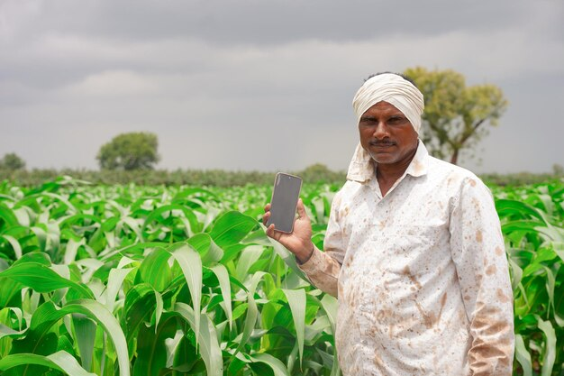

Maximize your crop yield, minimize risk, and improve efficiency with our intelligent crop recommendation system.
Enter Your LocationOur system works by analyzing weather data for your location and recommending the most suitable crops for planting. Simply enter your location, and we'll provide personalized recommendations based on the current season.
"Thanks to this system, I've been able to increase my crop yield significantly and minimize
losses during adverse weather conditions. Highly recommended!"
- Vincent Luhanga, Farmer

"The crop recommendations provided by this system have been incredibly accurate,
saving me time and resources. Great tool for any farmer!"
- Propser Kacheche, Farmer
Over 2,000 farmers helped
Increased crop yield by 30%
Trusted by farmers Country-Wide